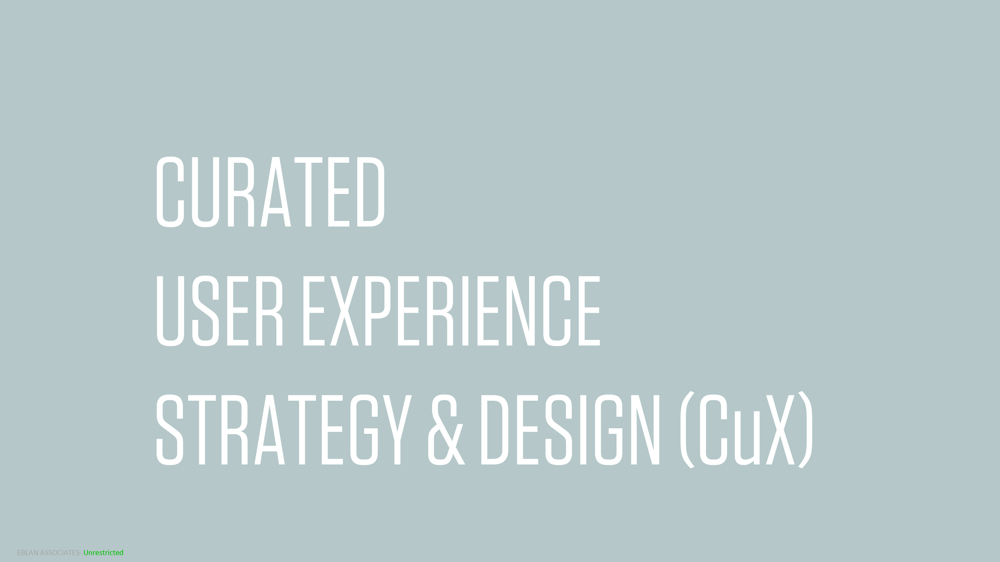
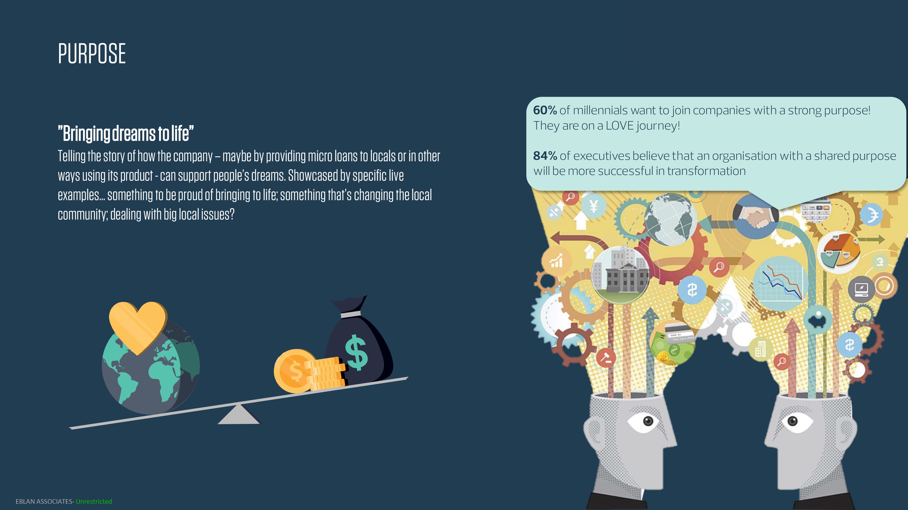
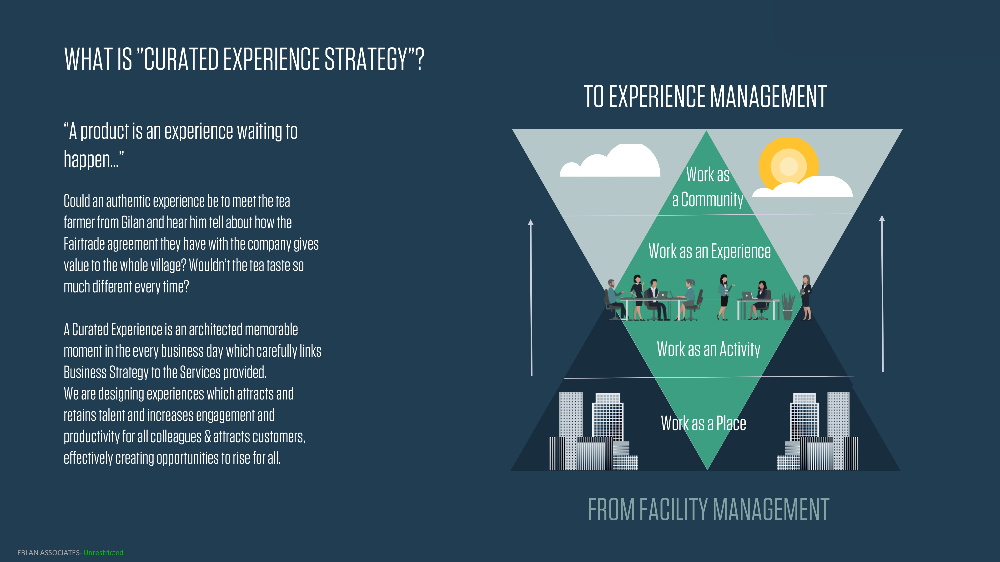
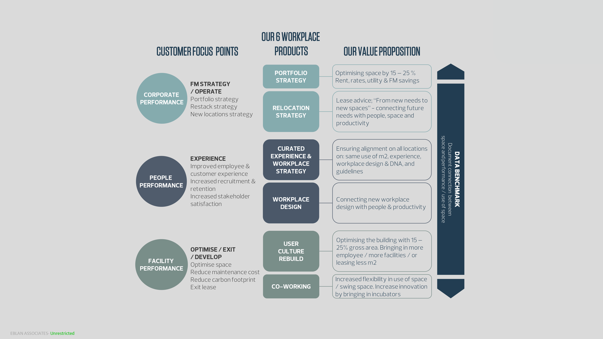

We design architecture that balances form, function and long-term value. Our approach is rooted in clarity, efficiency and contextual understanding.
At Worq Group, we believe that “A product is an experience waiting to happen…” ; Could an authentic experience be to meet the tea farmer from Gilan and hear him tell about how the Fair trade agreement they have with the company gives value to the whole village? Wouldn’t the tea taste so much different every time? We offer a unique product: Curated User Experience Strategy (CuX).

CuX is an architected memorable moment in the every business day which carefully links Business Strategy to the Services provided. We are designing experiences which attracts and retains talent and increases engagement and productivity for all colleagues & attracts customers, effectively creating opportunities to rise for all. At Worq Group, we have a Purpuse: ”Bringing dreams to life”

Telling the story of how the company – maybe by providing micro loans to locals or in other ways using its product - can support people’s dreams. Showcased by specific live examples… something to be proud of bringing to life; something that’s changing the local community; dealing with big local issues?

We deliver our products aligned with rising trends in customer relations and colleagues approach to workplace experience such as Sustainability, Social Consciousness, Mindfulness, Agility and Innovation.
